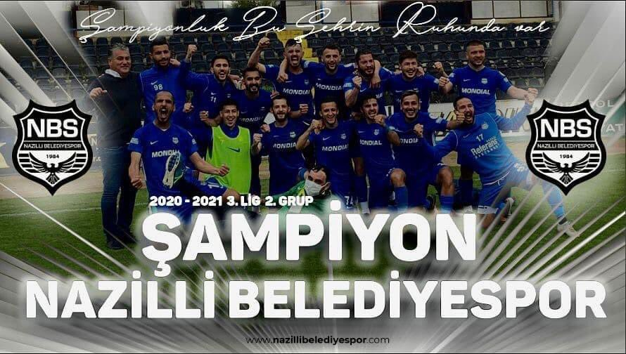
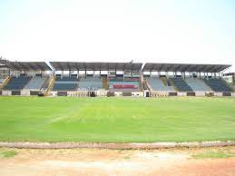

Nazilli Belediye Spor
 
Nazilli Belediyespor 1984'te Aydın'ın Nazilli ilçesinde kurulmuştur. Kulüp 2020-21 sezonunda 3. Lig'de şampiyon olarak 2. Lig'e yükselmiştir. Nazilli Belediyespor Kulübü futbolun yanı sıra hentbol, voleybol, masa tenisi, basketbol, satranç, güreş, plaj voleybolu ve tenis gibi spor dallarında faaliyetini sürdürmektedir.